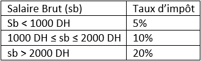

Série 3 — évaluations
Série d'exercices N°3
|
exercice N°1║ Correction Ecrire un Programme python qui permet de calculer la moyenne de deux notes d’un élève et d’afficher son résultat et son appréciation : – Réussir : si la moyenne est supérieure ou égal 10 – Rattrapage : si la moyenne est comprise entre 8 et10 – Echoué : si la moyenne est inférieure à 10 |
|
exercice N°2║ Correction Ecrire un Programme python et programme Python qui donne l’état de l’eau selon sa température : - Si T < 0 : état solide. - Si 0 < T < 100 : état liquide. - Si T > 100 : état gazeux. |
|
exercice N°3║ Correction Ecrire un Programme python qui permet d’afficher le maximum de trois nombres réels |
|
exercice N°4║ Correction Ecrire un Programme python qui permet d’afficher le minimum de trois nombres réels |
|
exercice N°5║ Correction Ecrire un Programme python qui permet de tester si la somme de deux nombres est positive, négative, ou nulle |
|
exercice N°6║ Correction Ecrire un Programme python qui permet de résoudre l’équation 1ère degré (ax+ b= 0) |
|
exercice N°7║ Correction Ecrire un Programme python qui permet de résoudre l’équation de second degré (ax2 + bx + c = 0) |
|
exercice N°8║ Correction On veut calculer le montant des impôts d’un salarie. La grille à utiliser est la suivante :  Ecrire un Programme python qui lit le salaire brut et affiche le montant des impôts et le salaire net |
|
exercice N°9║ Correction Ecrire un Programme python qui permet classer 3 nombres d’une manière croissante |
|
exercice N°10║ Correction Ecrire un Programme python qui permet d’afficher le signe du produit de deux entiers sans faire la multiplication |
|
exercice N°11║ Correction Ecrire un Programme python et programme Python qui donne la mention selon la moyenne générale obtenue par un élève : - Si 0 ≤ moyenne < 4 : très faible - Si 4 ≤ moyenne < 8 : faible - Si 8 ≤ moyenne < 10 : insuffisant - Si 10 ≤ moyenne < 12 : Passable - Si 12 ≤ moyenne < 14 : Assez bien - Si 14 ≤ moyenne < 16 : Bien - Si 16 ≤ moyenne < 18 : Très bien - Si 18 ≤ moyenne < 20 : Excellent |